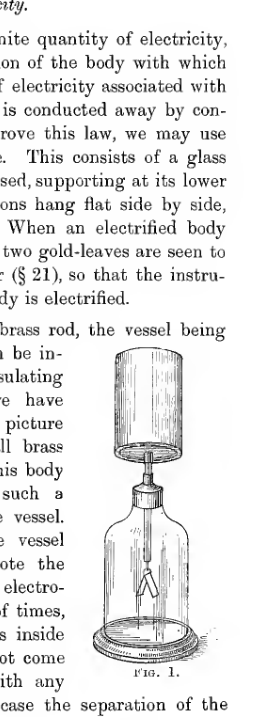
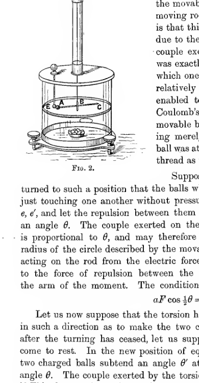
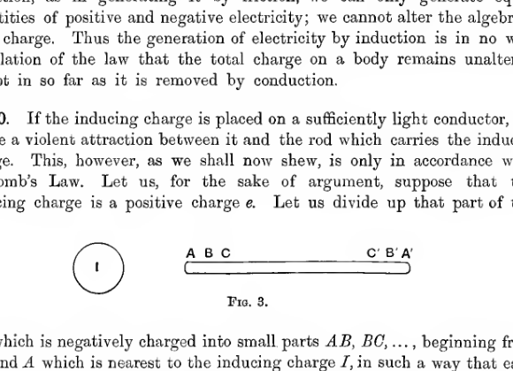

Chapter I#
Physical Principles#
The Fundamental Conceptions of Electrostatics#
I. State of Electrification of a Body#
5. We proceed to a discussion of the fundamental conceptions which form the basis of Electrostatics. The first of these is that of a state of electrification of a body. When a piece of amber has been rubbed so that it attracts small bodies to itself, we say that it is in a state of electrification, or, more shortly, that it is electrified.
Other bodies besides amber possess the power of attracting small bodies after being rubbed, and are therefore susceptible of electrification. Indeed it is found that all bodies possess this property, although it is less easily recognised in the case of most bodies, than in the case of amber. For instance a brass rod with a glass handle, if rubbed on a piece of silk or cloth, will show the power to a marked degree. The electrification here resides in the brass; as will be explained immediately, the interposition of glass or some similar substance between the brass and the hand is necessary in order that the brass may retain its power for a sufficient time to enable us to observe it. If we hold the instrument by the brass rod and rub the glass handle we find that the same power is acquired by the glass.
II. Conductors and Insulators#
6. Let us now suppose that we hold the electrified brass rod in one hand by its glass handle, and that we touch it with the other hand. We find that after touching it its power of attracting small bodies will have completely disappeared. If we immerse it in a stream of water or pass it through a flame we find the same result. If on the other hand we touch it with a piece of silk or a rod of glass or stand it in a current of air, we find that its power of attracting small bodies remains unimpaired, at any rate for a time. It appears therefore that the human body, a flame or water have the power of destroying the electrification of the brass rod when placed in contact with it, while silk and glass and air do not possess this property. It is for this reason that in handling the electrified brass rod, the substance in direct contact with the brass has been supposed to be glass and not the hand.
In this way we arrive at the idea of dividing all substances into two classes according as they do or do not remove the electrification when touching the electrified body. The class which remove the electrification are called conductors, for as we shall see later, they conduct the electrification away from the electrified body rather than destroy it altogether; the class which allow the electrified body to retain its electrification are called non-conductors or insulators. The classification of bodies into conductors and insulators appears to have been first discovered by Stephen Gray (1696-1736).
At the same time it must be explained that the difference between insulators and conductors is one of degree only. If our electrified brass rod were left standing for a week in contact only with the air surrounding it and the glass of its handle, we should find it hard to detect traces of electrification after this time, the electrification would have been conducted away by the air and the glass. So also if we had been able to immerse the rod in a flame for a billionth of a second only, we might have found that it retained considerable traces of electrification. It is therefore more logical to speak of good conductors and bad conductors than to speak of conductors and insulators. Nevertheless the difference between a good and a bad conductor is so enormous, that for our present purpose we need hardly take into account the feeble conducting power of a bad conductor, and may without serious inconsistency speak of a bad conductor as an insulator. There is, of course, nothing to prevent us imagining an ideal substance which has no conducting power at all. It will often simplify the argument to imagine such a substance, although we cannot realize it in nature.
It may be mentioned here that of all substances the metals are by very much the best conductors. Next come solutions of salts and acids, and lastly as very bad conductors (and therefore as good insulators) come oils, waxes, silk, glass and such substances as sealing wax, shellac, indiarubber. Gases under ordinary conditions are good insulators. Indeed it is worth noticing that if this had not been so, we should probably never have become acquainted with electric phenomena at all, for all electricity would be carried away by conduction through the air as soon as it was generated. Flames, however, conduct well, and, for reasons which will be explained later, all gases become good conductors when in the presence of radium or of so-called radio-active substances. Distilled water is an almost perfect insulator, but any other sample of water will contain impurities which generally cause it to conduct tolerably well, and hence a wet body is generally a bad insulator. So also an electrified body suspended in air loses its electrification much more rapidly in damp weather than in dry, owing to conduction by water-particles in the air.
When the body is in contact with insulators only, it is said to be insulated. The insulation is said to be good when the electrified body retains its electrification for a long interval of time, and is said to be poor when the electrification disappears rapidly. Good insulation will enable a body to retain most of its electrification for some days, while with poor insulation the electrification will last only for a few minutes or seconds.
III. Quantity of Electricity#
7. We pass next to the conception of a definite quantity of electricity, this quantity measuring the degree of electrification of the body with which it is associated. It is found that the quantity of electricity associated with any body remains constant except in so far as it is conducted away by conductors. To illustrate, and to some extent to prove this law, we may use an instrument known as the gold-leaf electroscope. This consists of a glass vessel, through the top of which a metal rod is passed, supporting at its lower end two gold-leaves which under normal conditions hang flat side by side, touching one another throughout their length. When an electrified body touches or is brought near to the brass rod, the two gold-leaves are seen to separate, for reasons which will become clear later, so that the instrument can be used to examine whether or not a body is electrified.
Let us fix a metal vessel on the top of the brass rod, the vessel being closed but having a lid through which bodies can be inserted. The lid must be supplied with an insulating handle for its manipulation. Suppose that we have electrified some piece of matter, to make the picture definite, suppose that we have electrified a small brass rod by rubbing it on silk, and let us suspend this body inside the vessel by an insulating thread in such a manner that it does not touch the sides of the vessel. Let us close the lid of the vessel, so that the vessel entirely surrounds the electrified body, and note the amount of separation of the gold-leaves of the electroscope. Let us try the experiment any number of times, placing the electrified body in different positions inside the closed vessel, taking care only that it does not come into contact with the sides of the vessel or with any other conductors. We shall find that in every case the separation of the gold-leaves is exactly the same.

A gold-leaf electroscope stands inside a glass vessel on a circular base. A vertical metal rod descends from a capped cylindrical top into the bottle, ending above two diverging gold leaves. The entire apparatus is enclosed in a bell-jar-like container and labeled Fig. 1.
In this way then, we get the idea of a definite quantity of electrification associated with the brass rod, this quantity being independent of the position of the rod inside the closed vessel of the electroscope. We find, further, that the divergence of the gold-leaves is not only independent of the position of the rod inside the vessel, but is independent of any changes of state which the rod may have experienced between successive insertions in the vessel, provided only that it has not been touched by conducting bodies. We might for instance heat the rod, or, if it was sufficiently thin, we might bend it into a different shape, and on replacing it inside the vessel we should find that it produced exactly the same deviation of the gold-leaves as before. We may, then, regard the electrical properties of the rod as being due to a quantity of electricity associated with the rod, this quantity remaining permanently the same, except in so far as the original charge is lessened by contact with conductors, or increased by a fresh supply.
8. We can regard the electroscope as giving an indication of the magnitude of a quantity of electricity, two charges being equal when they produce the same divergence of the leaves of the electroscope.
In the same way we can regard a spring-balance as giving an indication of the magnitude of a weight, two weights being equal when they produce the same extension of the spring.
The question of the actual quantitative measurement of a quantity of electricity as a multiple of a specified unit has not yet been touched. We can, however, easily devise means for the exact quantitative measurement of a quantity of electricity in terms of a unit. We can charge a brass rod to any degree we please, and agree that the charge on this rod is to be taken to be the standard unit charge. By rubbing a number of rods until each produces exactly the same divergence of the electroscope as the standard charge, we can prepare a number of unit charges, and we can now say that a charge is equal to \(n\) units if it produces the same divergence of the electroscope as would be produced by \(n\) units all inserted in the vessel of the electroscope at once. This method of measuring an electric charge is of course not one that any rational being would apply in practice, but the object of the present explanation is to elucidate the fundamental principles, and not to give an account of practical methods.
9. Positive and Negative Electricity. Let us suppose that we insert in the vessel of the electroscope the piece of silk on which one of the brass rods has been supposed to have been rubbed in order to produce its unit charge. We shall find that the silk produces a divergence of the leaves of the electroscope, and further that this divergence is exactly equal to that which is produced by inserting the brass rod alone into the vessel of the electroscope. If, however, we insert the brass rod and the silk together into the electroscope, no deviation of the leaves can be detected.
Again, let us suppose that we charge a brass rod \(A\) with a charge which the divergence of the leaves shows to be \(n\) units. Let us rub a second brass rod \(B\) with a piece of silk or with a brass rod of another kind until the electroscope, if this rod is introduced alone, will show the same divergence, i.e., a charge of \(m\) units; let us suppose, however, that \(m\) is less than \(n\). If we insert the two rods together, the electroscope will indicate \(n + m\) units. If, however, we insert the rod \(A\) and the silk or rod \(C\) together, the deviation will be found to correspond to \(n - m\) units.
In this way it is found that a charge of electricity must be supposed to have sign as well as magnitude. As a matter of convention, we agree to speak of the \(m\) units of charge on the silk as \(m\) positive units, or more briefly as a charge \(+m\), while we speak of the charge on the brass as \(m\) negative units, or a charge \(-m\).
10. Generation of Electricity. It is found to be a general law that, on rubbing two bodies which are initially uncharged, equal quantities of positive and negative electricity are produced, the total charge generated being therefore zero.
We have seen that the electroscope does not determine the sign of the charge placed inside the closed vessel, but only its magnitude. We can, however, determine both sign and magnitude by two observations. Let us first insert the charged body alone into the vessel. Then if the divergence of the leaves corresponds to \(m\) units, we know that the charge is either \(+m\) or \(-m\) units. If we now insert along with it a body possessing a known charge \(+n\) units, then the charge we are investigating must itself be either \(+m\) or \(-m\), according as the divergence now indicates \(n + m\) or \(n - m\) units. With more elaborate instruments to be described later (electrometers) it is possible to determine both the magnitude and sign of a charge by one observation.
11. If we had rubbed a rod of glass, instead of one of brass, on the silk, we should have found that the silk had a negative charge, and the glass of the same amount as that on the brass rod had the same opposite charge. It therefore appears that the sign of the charge produced on a body by friction depends not only on the nature of the body itself, but also on the nature of the body with which it has been rubbed.
The following is found to be a general law: If rubbing a substance \(A\) on a second substance \(B\) charges \(A\) positively and \(B\) negatively, and if rubbing the substance \(B\) on a third substance \(C\) charges \(B\) positively and \(C\) negatively, then rubbing the substance \(A\) on the substance \(C\) will charge \(A\) positively and \(C\) negatively.
It is therefore possible to arrange any number of substances in a list such that a substance is charged with positive or negative electricity when rubbed with a second substance, according as the first substance stands above or below the second substance on the list. The following is a list of this kind, which includes some of the most important substances:
Cat’s skin, Glass, Ivory, Silk, Rock crystal, The Hand, Wood, Sulphur, Flannel, Cotton, Shellac, Caoutchouc, Resins, Guttapercha, Metals, Gun-cotton.
A substance is said to be electropositive or electronegative to a second substance according as it stands above or below it on a list of this kind. Thus of any pair of substances one is always electropositive to the other, the other being electronegative to the first. Two substances, although chemically the same, must be regarded as distinct for the purpose of a list of this kind, if their physical conditions are different; for instance, it is found that a hot body must be placed lower on the list than a cold body of the same chemical composition.
IV. Attraction and Repulsion of Electric Charges#
12. A small ball of pith or some similarly light substance, coated with gold-leaf and suspended by an insulating thread, forms a convenient instrument for investigating the forces, if any, which are brought into play by the presence of electric charges. Let us electrify a pith ball of this kind positively and suspend it from a fixed point. We shall find that when we bring a second small body charged with positive electricity near to this first body, the two bodies tend to repel one another, whereas if we bring a negatively charged body near to it, the two bodies tend to attract one another. From this and similar experiments it is found that small bodies charged with electricity of the same sign repel one another, and that small bodies charged with electricity of different signs attract one another.
This law can be well illustrated by tying together a few light silk threads by their ends, so that they form a tassel, and allowing the threads to hang vertically. If we now stroke the threads with the hand, or brush them with a brush of any kind, the threads all become positively electrified and therefore repel one another. They consequently no longer hang vertically, but spread themselves out into a cone. A similar phenomenon can often be noticed on brushing the hair in dry weather. The hairs become positively electrified and tend to stand out from the head.
13. On shaking up a mixture of powdered red lead and yellow sulphur, the particles of red lead become positively electrified, and those of the sulphur become negatively electrified, as the result of the friction which has occurred between the two sets of particles in the shaking. If some of this powder is now dusted on to a positively electrified body, the particles of sulphur will be attracted and those of red lead repelled. The red lead will therefore fall off, or be easily removed by a breath of air, while the sulphur particles will be retained. The positively electrified body will involve more repulsion of the red lead than attraction of the sulphur, because the sulphur is nearer the positively electrified body than the red lead, and similarly a negatively electrified body will retain the red lead and repel the sulphur.
14. The attraction and repulsion of two charged bodies is in many respects different from the force between one charged and one uncharged body. The latter force, as has been explained, was known to the Greeks; it must be attributed, as we shall see later, to what is known as electric induction, and is invariably attractive. The forces between two charged bodies, however, may be either attractive or repulsive, and hardly seem to have been noticed until the eighteenth century.
The observations of Robert Symmer (1759) on the attraction and repulsion of charged bodies are at least amusing. He was in the habit of wearing two pairs of stockings simultaneously, a worsted pair for comfort and a silk pair for appearance. In pulling off the silk stockings he noticed that they gave a crackling noise, and sometimes that they emitted sparks when taken off in the dark. On taking the two stockings off together from the foot and then drawing the one from inside the other, he found that both became inflated so as to reproduce the shape of the foot, and exhibited attractions and repulsions at a distance of as much as a foot and a half.
“When this experiment is performed with two black stockings in one hand, and two white in the other, it exhibits a very curious spectacle; the repulsion of those of the same colour, and the attraction of those of different colours, throws them into an agitation that is not unentertaining, and makes them catch each other at that of its opposite colour, and at a greater distance than one would expect. When allowed to come together they all unite in one mass. When separated, they resume their former appearance, and admit of the repetition of the experiment as often as you please, till their electricity, gradually wasting, stands in need of being recruited.”
The Law of Force between Charged Particles#
15. The Torsion Balance. Coulomb (1785) devised an instrument known as the Torsion Balance, which enabled him not only to verify the laws of attraction and repulsion qualitatively, but also to form an estimate of the actual magnitude of these forces.
The apparatus consists essentially of two light balls \(A, C\), fixed at the two ends of a rod which is suspended at its middle point \(B\) by a very fine thread of silver, quartz or other material. The upper end of the thread is fastened to a movable head \(D\), so that the thread and the rod can be made to rotate by screwing the head. If the rod is acted on only by its weight, the condition for equilibrium is obviously that there shall be no torsion in the thread. If, however, we fix a third small ball \(E\) in the same plane as the other two, and if the three balls are electrified, the forces between the fixed ball and the movable ones will exert a couple on the moving rod, and the condition for equilibrium is that this couple shall exactly balance that due to the torsion. Coulomb found that the couple exerted by the torsion of the thread was exactly proportional to the angle through which one end of the thread had been turned relatively to the other, and in this way was enabled to measure his electric forces. In Coulomb’s experiments one only of the two movable balls was electrified, the second serving merely as a counterpoise, and the fixed ball was at the same distance from the torsion thread as the two movable balls.

A cylindrical glass enclosure contains a horizontal rod suspended at its center beneath a tall vertical torsion stem topped by a turning head labeled D. Three small balls labeled A, B, and C lie on the rod plane, while a fixed charged ball E sits near one end. The instrument stands on a circular base with leveling screws and is captioned Fig. 2.
Suppose that the head of the thread is turned to such a position that the balls when uncharged rest in equilibrium just touching one another without pressure. Let the balls receive charges \(e, e'\), and let the repulsion between them result in the bar turning through an angle \(\theta\). The couple exerted on the bar by the torsion of the thread is proportional to \(\theta\), and may therefore be taken to be \(\kappa \theta\). If \(a\) is the radius of the circle described by the movable ball, we may regard the couple acting on the rod from the electric forces as made up of a force \(F\), equal to the force of repulsion between the two balls, multiplied by \(a \cos \tfrac{1}{2}\theta\), the arm of the moment. The condition for equilibrium is accordingly
Let us now suppose that the torsion head is turned through an angle \(\phi\) in such a direction as to make the two charged balls approach each other; after the turning has ceased, let us suppose that the balls are allowed to come to rest. In the new position of equilibrium, let us suppose that the two charged balls subtend an angle \(\theta'\) at the centre, instead of the former angle \(\theta\). The couple exerted by the torsion thread is now \(\kappa (\theta' + \phi)\), so that if \(F'\) is the new force of repulsion we must have
By observing the value of \(\phi\) required to give definite values of \(\theta'\) we can calculate values of \(F'\) corresponding to any series of values of \(\theta'\). From a series of experiments of this kind it is found that so long as the charges on the two balls remain the same, \(F'\) is proportional to \(\operatorname{cosec}^2 \tfrac{1}{2}\theta'\), from which it is easily seen to follow that the force of repulsion varies inversely as the square of the distance. And when the charges on the two balls are varied it is found that the force varies as the product of the two charges, so long as their distance apart remains the same. As the result of a series of experiments conducted in this way Coulomb was able to enunciate the law:
The force between two small charged bodies is proportional to the product of their charges, and is inversely proportional to the square of their distance apart, the force being one of repulsion or attraction according as the two charges are of the same or of opposite kinds.
16. In mathematical language we may say that there is a force of repulsion of amount
where \(e, e'\) are the charges, \(r\) their distance apart, and \(c\) is a positive constant.
If \(e, e'\) are of opposite signs the product \(e e'\) is negative, and a negative repulsion must be interpreted as an attraction.
Although this law was first published by Coulomb, it subsequently appeared that it had been discovered at an earlier date by Cavendish, whose experiments were much more refined than those of Coulomb. Cavendish was able to satisfy himself that the law was certainly intermediate between the inverse \(2 + \tfrac{1}{50}\) and \(2 - \tfrac{1}{50}\)th power of the distance (see below, \(\S\S 46\)-\(48\)). Unfortunately his researches remained unknown until his manuscripts were published in 1879 by Clerk Maxwell.
The experiments of Coulomb and Cavendish, it need hardly be said, were very rough compared with those which are rendered possible by modern apparatus of great perfection, and these experiments are no longer the justification for using the law of Coulomb as the basis of the Mathematical Theory of Electricity. More delicate experiments with the apparatus used by Cavendish, which will be explained later, have, however, been found to give a complete confirmation of Coulomb’s Law, so long as the charged bodies may both be regarded as infinitely small compared with their distance apart. Any deviation from the law of Coulomb must accordingly be attributed to the finite sizes of the bodies which carry the charges. As it is only in the case of infinitely small bodies that the symbol \(r\) of formula (1) has had any meaning assigned to it, we may regard the law (1) as absolutely true, at any rate so long as \(r\) is large enough to be a measurable quantity.
The Unit of Electricity#
17. The law of Coulomb supplies us with a convenient unit in which to measure electric charges.
The unit of mass, the pound or gramme, is a purely arbitrary unit, and all quantities of mass are measured simply by comparison with this unit. The same is true of the unit of space. If it were possible to keep a charge of electricity unimpaired throughout all time we might take an arbitrary charge of electricity as standard, and measure all charges by comparison with this one standard charge, in the way suggested in \(\S 8\). As it is not possible to do this, we find it convenient to measure electricity with reference to the units of mass, length and time of which we are already in possession, and Coulomb’s Law enables us to do this. We define as the unit charge a charge such that when two small bodies are placed one on each of two small particles at a distance of one centimetre apart, the force of repulsion between them is one dyne. With this definition it is clear that the quantity \(c\) in the formula (1) becomes equal to unity, so long as the c.g.s. system of units is used.
In a similar way, if the mass of a body did not remain constant, we might have to define the unit of mass with reference to those of time and length by saying that a mass is a unit mass provided that two such masses, placed at a unit distance apart, produce in each other by their mutual gravitational attraction an acceleration of a centimetre per second per second. In this case we should have the gravitational acceleration \(f\) given by an equation of the form
and this equation would determine the unit of mass.
18. Physical dimensions. If the unit of mass were determined by equation (2), \(m\) would appear to have the dimensions of an acceleration multiplied by the square of a distance, and therefore dimensions
As a matter of fact, however, we know that mass is something entirely apart from length and time, except in so far as it is connected with them through the law of gravitation. The complete gravitational acceleration is given by
where \(\gamma\) is the so-called gravitation constant.
By our proposed definition of unit mass we should have made the value of \(\gamma\) numerically equal to unity, but its physical dimensions are not those of a mere number, so that we cannot neglect the factor \(\gamma\) when equating physical dimensions on the two sides of the equation.
So also in the formula
we can and do choose our unit of charge in such a way that the numerical value of \(c\) is unity, so that the numerical equation becomes
but we must remember that the factor \(c\) still retains its physical dimensions. Electricity is something entirely apart from mass, length and time, and it follows that we ought to treat the dimensions of equation (3), by introducing a new unit of electricity \(E\) and saying that \(c\) is of the dimensions of a force divided by \(E^2/r^2\) and therefore of dimensions
If, however, we compare dimensions in equation (4), neglecting to take account of the physical dimensions of the suppressed factor \(c\), it appears as though a charge of electricity can be expressed in terms of the units of mass, length and time, just as it might appear from equation (2) as though a mass could be expressed in terms of the units of length and time. The apparent dimensions of a charge of electricity are now
It will be readily understood that these dimensions are merely apparent and not in any way real, when it is stated that other systems of units are also in use, and that the apparent physical dimensions of a charge of electricity are found to be different in the different systems of units. The system which we have just described, in which the unit is defined as the charge which makes \(c\) numerically equal to unity in equation (3), is known as the Electrostatic system of units.
There will be different electrostatic systems of units corresponding to different units of length, mass and time. In the c.g.s. system these units are taken to be the centimetre, gramme and second. In passing from one system of units to another the unit of electricity will change as if it were a physical quantity having dimensions \(M^{\frac{1}{2}} L^{\frac{3}{2}} T^{-1}\), so long as the agreement that equation (4) is to be numerically true, i.e., so long as the systems remain electrostatic. This gives a certain importance to the apparent dimensions of the unit of electricity, as expressed in formula (5).
V. Electrification by Induction#
19. Let us suspend a metal rod by insulating supports. Suppose that the rod is originally uncharged, and that we bring a small body charged with electricity near to one end of the rod, without allowing the two bodies to touch. We shall find on sprinkling the rod with electrified powder of the kind previously described (\(\S 13\)), that the rod is now electrified, the signs of the charges at the two ends being different. This electrification is known as electrification by induction. We speak of the electricity on the rod as an induced charge, and that on the originally electrified body as the inducing or exciting charge. We find that the induced charge at the end of the rod nearest to the inducing charge is of sign opposite to that of the inducing charge, and that at the further end of the rod the charge is of the same sign as that of the inducing charge. If the inducing charge is removed to a great distance from the rod, we find that the induced charges disappear completely, the rod resuming its original unelectrified state.
If the rod is arranged so that it can be divided into two parts, we can separate the two parts before removing the inducing charge, and in this way retain the two parts of the induced charge for further examination.
If we insert these two induced charges into the vessel of the electroscope, we find that the total electrification is zero; in generating electricity by induction, as in generating it by friction, we can only generate equal quantities of positive and negative electricity; we cannot alter the algebraic total charge. Thus the generation of electricity by induction is in no way a violation of the law that the total charge on a body remains unaltered except in so far as it is removed by conduction.
20. If the inducing charge is placed on a sufficiently light conductor, we notice a violent attraction between it and the rod which carries the induced charge. This, however, as we shall now show, is only in accordance with Coulomb’s Law. Let us, for the sake of the argument, suppose that the inducing charge is a positive charge \(e\). Let us divide up that part of the rod which is negatively charged into small parts \(A B\), \(B C\), …, beginning from the end \(A\) which is nearest to the inducing charge \(I\), in such a way that each part contains the same small charge \(-e\), of negative electricity. Let us similarly divide up the part of the rod which is positively charged into sections \(A'B'\), \(B'C'\), …, beginning from the further end, and such that each of these parts contains a charge \(+e\) of positive electricity. Since the total induced charge is zero, the number of positively charged sections \(A'B', B'C', ...\) must be exactly equal to the number of negatively charged sections \(A B, B C, ...\). The whole series of sections can therefore be divided into a series of pairs
such that the two sections of any pair contain equal and opposite charges.

A charged inducing body labeled I is shown as a circle to the left of a horizontal conductor. The conductor is subdivided into short labeled segments A, B, C near the left end and corresponding primed segments near the right end, illustrating opposite induced charges distributed along the rod. The sketch is captioned Fig. 3.
The charge on \(A'B'\) being of the same sign as the inducing charge \(e\), repels the body \(I\) which carries this charge, while the charge on \(A B\), being of the same sign as the charge on \(I\), attracts \(I\). Since \(A B\) is nearer to \(I\) than \(A'B'\), it follows from Coulomb’s Law that the attractive force \(e e/r^2\) between \(A B\) and \(I\) is numerically greater than the repulsive force \(e e/r^2\) between \(A'B'\) and \(I\), so that the resultant action of the pair of sections \(A B\), \(A'B'\) upon \(I\) is an attraction. Obviously a similar result is true for every other pair of sections, so that we arrive at the result that the whole force between the two bodies is attractive.
This result fully accounts for the fundamental property of a charged body to attract small bodies to which no charge has been given. The proximity of the charged body induces charges of different signs on those parts of the body which are nearer to and further away from the inducing charge, and although the total induced charge is zero, yet the attractions will always outweigh the repulsions, so that the resultant force is always one of attraction.
21. The same conceptions explain the divergence of the gold-leaves of the electroscope which occurs when a charged body is brought near to the plate of the electroscope or introduced into a closed vessel standing on this plate. All the conducting parts of the electroscope, rod, plate and gold-leaves, may be regarded as a single conductor, and the gold-leaves form the part furthest removed from the charged body. The induced charge at the further end will evidently be of the same sign as the charge carried by the charged body, and so the charge on the two gold-leaves will be of the same sign; they repel one another.
22. On separating the two parts of a conductor while an induced charge is upon it, and then removing the two parts from the influence of the inducing charge, we gain two charges of electricity without any diminution of the inducing charge. We can store or utilise these charges in any way and on replacing the two parts of the conductor in position, we shall again obtain an induced charge. This principle underlies the action of the Electrophorus. A cake of resin is electrified by friction, and for convenience is placed with its electrified surface uppermost on a horizontal table. A metal disc is held by an insulating handle parallel to the cake of resin and at a slight distance above it. The operator then touches the upper surface of the disc with his finger. When the process has reached this stage, the metal disc, the body of the operator and the earth itself form one conductor. The negative electricity on the resin induces a positive charge on the nearer part of the conductor, primarily on the metal disc, and a negative charge on the more remote part of the conductor, the earth. When the operator removes his finger, the disc is left insulated and in possession of a positive charge. As already explained, this charge may be used and the process repeated indefinitely.
In all its essentials the principle utilised in the generation of electricity by the influence machines of Voss, Holtz, Wimshurst and others is identical with that of the Electrophorus. These all consist of arrangements by which the various stages just described are repeated cyclically time after time.
23. Electric Equilibrium. Returning to the apparatus illustrated in fig. 3, p. 16, it is found that if we remove the inducing charge without allowing the conducting rod to come into contact with other conductors, the charge on the rod disappears gradually as the inducing and induced charges recombine, positive and negative electricity combining in equal quantities and neutralising one another. This shows that the inducing charge must be supposed to act upon the electricity of the induced rod, rather than upon the matter of the conductor. Upon the same principle, the various parts of the induced charge must be regarded as acting upon one another. Moreover, in a conductor charged with electricity at rest, there is no reaction between matter and electricity tending to prevent the passage of electricity through the conductor. For if there were, it would be possible for parts of the induced charge to be retained after the inducing charge had been removed, the parts of the induced charge being retained in position by their reaction with the matter of the conductor. Nothing of this kind is observed to occur. We conclude then that the elements of electricity on a conductor are each in equilibrium under the influence solely of the forces exerted by the remaining elements of charge.
24. An exception occurs when the electricity is actually at the surface of the conductor. Here there is an obvious reaction between matter and electricity, the reaction which prevents the electricity from leaving the surface of the conductor. Clearly this reaction will be normal to the surface, so that the forces acting upon the electricity in directions which lie in the tangential plane to the surface must be entirely forces from other charges of electricity, and these must be in equilibrium. To balance the action of the matter on the electricity there must be an equal and opposite reaction of electricity on matter. This, then, will act normally outwards at the surface of the conductor. Experimentally it is best put in evidence by the electrification of soap-bubbles. A soap-bubble when electrified is observed to expand, the normal reaction between electricity and matter at its surface driving the surface outwards until equilibrium is reestablished (see below, \(\S 94\)).
25. Also when two conductors of different material are placed in contact, electric phenomena are found to occur which have been explained by Helmholtz as the result of the operation of reactions between electricity and matter at the surfaces of the conductors. Thus, although electricity may pass quite freely over the different parts of the same conductor, it is not strictly true to say that electricity can pass freely from one conductor to another of different material with which it is in contact. Compared, however, with the forces with which we shall have to deal in electrostatics, electric forces of this kind are negligible, and we may therefore, for all practical purposes, regard any number of conductors placed in contact as a single conductor.
Theories to Explain Electrical Phenomena#
26. One-fluid Theory. Franklin, as far back as 1751, tried to include all the electrical phenomena with which he was acquainted in one simple explanation. He suggested that all these phenomena could be explained by supposing the existence of an indestructible electric fluid which could be associated with matter in different degrees. Corresponding to the normal state of matter, in which no electrical properties are exhibited, there is a definite normal amount of electric fluid. When a body was charged with positive electricity, Franklin explained that there was an excess of electric fluid above the normal amount, and similarly a charge of negative electricity represented a deficiency of electric fluid. The generation of equal quantities of positive and negative electricity was now explained: for instance, in rubbing two bodies together we simply transfer electric fluid from one body to the other. To explain the attractions and repulsions of electrified bodies, Franklin supposed that the particles of ordinary matter repelled one another, while attracting the electric fluid. In the normal state of matter the quantities of electric fluid and ordinary matter were just balanced, so that there was neither attraction nor repulsion between bodies in the normal state. According to a later modification of the theory the attractions just out-balanced the repulsions of ordinary matter, the residual force accounting for gravitation.
27. Two-fluid Theory. A further attempt to explain electric phenomena was made by the two-fluid theory. In this there were three things concerned, ordinary matter and two electric fluids, positive and negative. The degree of electrification was supposed to be the measure of the excess of positive electricity over negative, or of negative over positive, according to the sign of the electrification. The two kinds of electricity attracted and repelled, electricities of the same kind repelling, and of opposite kinds attracting, and in this way the observed attractions and repulsions of electrified bodies were explained without having recourse to systems of forces between electricity and ordinary matter. It is, however, obvious that the two-fluid theory was too elaborate for the facts. On this theory ordinary matter devoid of both kinds of electricity would be physically different from matter possessing equal quantities of the two kinds of electricity, although both bodies would equally show an absence of electrification. There is no evidence that it is possible to establish any physical difference of this kind between totally unelectrified bodies, so that the two-fluid theory must be dismissed as explaining more than there is to be explained.
28. Modern view of Electricity. The two theories which have just been mentioned rested on no experimental evidence except such as is required to establish the phenomena with which they are directly concerned. The modern view of electricity, on the other hand, is based on an enormous mass of experimental evidence, to which contributions are made, not only by the phenomena of electrostatics, but also by the phenomena of almost every branch of physics and chemistry. The modern explanation of electricity is found to bear a very close resemblance to the older explanation of the one-fluid theory, so much so that it will be convenient to explain the modern view of electricity simply by making the appropriate modifications of the one-fluid theory.
We suppose the electric fluid of the one-fluid theory replaced by a crowd of small particles, electrons, it will be convenient to call them, all exactly similar, and each having exactly the same charge of negative electricity permanently attached to it. The electrons are almost unthinkably small; the mass of each is about \(8 \times 10^{-28}\) grammes, so that about as many would be required to make a gramme as would be required of cubic centimetres to make a sphere of the size of our earth. The charge on an electron is enormously large compared with its mass, the charge of each being about \(4.5 \times 10^{-10}\) in electrostatic units, so that a gramme of electrons would carry a charge equal to about \(5.6 \times 10^{17}\) electrostatic units. To form some conception of the intense degree of electrification represented by these data, it may be noticed that two grammes of electrons, if placed at a distance of a metre apart, would repel one another with a force equal to the weight of about \(3.2 \times 10^{22}\) tons. Thus the electric force outweighs the gravitational force in the ratio of about \(5 \times 10^{42}\) to 1.
A piece of ordinary matter in its unelectrified state contains a certain number of electrons of this kind, and this number is just such that two pieces of matter each in this state exert no electrical forces on one another; this condition in fact defines the unelectrified state. A piece of matter appears to be charged with negative or positive electricity according as the number of negatively-charged electrons it possesses is in excess or in defect of the number it would possess in its unelectrified state.
Three important consequences follow from these facts.
In the first place it is clear that we cannot go on dividing a charge of electricity indefinitely, just as in chemistry we come as soon as we come to the charge of one electron to a natural limit, just as in chemistry we suppose a natural limit to be imposed as soon as we come to the mass of an atom. The modern view of electricity may be justly described as an atomic view. And of all the experimental evidence which supports this view, none is more striking than the circumstance that the experiments continually reappear in the most varied kinds, and that the atomic charge of electricity appears always to be precisely the same.
In the second place, in charging an ordinary piece of matter with positive electricity, we simply remove some of its electrons. Thus matter without electrons must possess the properties of positive charges of electricity, but it is not at present known how these properties are to be accounted for. The origin of negative electric forces, i.e. forces which repel a negatively-charged particle, must be looked for in electrons, but the origin of positive electric forces remains unknown.
In the third place, in charging a body with electricity we either add to or subtract from it a mass according as we charge it with negative electricity, i.e. add to it a number of electrons, or charge it with positive electricity, i.e. remove from it a number of electrons. Since the mass of an electron is so minute in comparison with the charge it carries, it will readily be seen that the change in its mass is very much too small to be perceptible by any methods of measurement which are at our disposal. Maxwell mentions, as an example of a body possessing an electric charge compared with its mass, the case of a gramme of gold, which may be beaten into a gold-leaf one square metre in area, and can, in this state, hold a charge of \(60{,}000\) electrostatic units of negative electricity. The mass of the number of negatively electrified electrons necessary to carry this charge will be found, as the result of a brief calculation from the data already given, to be about \(10^{-13}\) grammes. The change of weight by electrification is therefore one which is far beyond the power of the most sensitive balance to detect.
On this view of electricity, the electrons must repel one another, and must be attracted by matter which is devoid of electrons, i.e. matter which is positively electrified. The reactions which, as we have seen, must be supposed to occur at the surface of charged conductors between matter and electricity, can now be interpreted simply as systems of forces between the electrons and the remainder of the matter. Up to a certain extent, these forces will restrain the electrons from leaving the conductor, but if the electric forces acting on the electrons exceed a certain limit, they will overcome the forces acting between the electrons and the remainder of the conductor, and an electric discharge takes place from the surface of the conductor.
Thus an essential feature of the modern view of electricity is that it regards the flow of electricity as a material flow of charged electrons. Good conductors and good insulators are seen to mean simply substances in which the electrons move with extreme ease and extreme difficulty respectively. The law that equal quantities of positive and negative electricity are generated simultaneously means that electrons may flow about, but cannot be created or annihilated.
The modern view enables us also to give a simple physical interpretation to the phenomenon of induction. A positive charge placed near a conductor will attract the electrons in the conductor, and these will flow through the conductor towards the charge until electrical equilibrium is established. There will then be an excess of negative electrons in the regions near the positive charge, and this excess will appear as an induced negative charge. The deficiency of electrons in the more remote parts of the conductor will appear as an induced positive charge. If the inducing charge is negative, the flow of electrons will be in the opposite direction, so that the signs of the induced charges will be reversed. In an insulator, no flow of electrons can take place, so that the phenomenon of electrification by induction does not occur.
On this view of electricity, negative electricity is essentially different in its nature from positive electricity; the difference is something more fundamental than a mere difference of sign. Experimental proof of this difference is not wanting; e.g. a sharply pointed conductor can hold a greater charge of positive than of negative electricity before reaching the limit at which a discharge begins to take place from its surface. But until we come to those parts of electric theory in which the flow of electricity has to be definitely regarded as a flow of electrons, the difference between positive and negative electricity is adequately represented by a difference of sign.
Summary#
29. It will be useful to conclude the chapter by a summary of the results which are arrived at by experiment, independently of all hypotheses as to the nature of electricity.
These have been stated by Maxwell in the form of laws, as follows:
Law I. The total electrification of a body, or system of bodies, remains always the same, except in so far as it receives electrification from or gives electrification to other bodies.
Law II. When one body electrifies another by conduction, the total electrification of the two bodies remains the same; that is, the one loses as much positive or gains as much negative electrification as the other gains of positive or loses of negative electrification.
Law III. When electrification is produced by friction, or by any other known method, equal quantities of positive and negative electricity are produced.
Definition. The electrostatic unit of electricity is that quantity of positive electricity which, when placed at unit distance from an equal quantity, repels it with unit of force.
Law IV. The repulsion between two small bodies charged respectively with \(e\) and \(e'\) units of electricity is numerically equal to the product of the charges divided by the square of the distance.
These are the forms in which the laws are given by Maxwell. Law I, it will be seen, includes II and III. As regards the Definition and Law IV, it is necessary to specify the medium in which the small bodies are placed, since, as we shall see later, the force is different when the bodies are in air, in a vacuum, or surrounded by other non-conducting media. It is usual to assume, for purposes of the Definition and Law IV, that the bodies are in air. For strict scientific exactness, we ought further to specify the density, the temperature, and the exact chemical composition of the air. Also we have seen that when the electricity is not insulated on small bodies, but is free to move on conductors, the force of Law IV must be regarded as acting on the charges of electricity themselves. When the electricity is not free to move, there is an action and reaction between the electricity and matter, so that the forces which really act on the electricity appear to act on the small bodies themselves which carry the charges.
References#
On the History of Electricity:
Encyc. Brit. 9th Ed. Art. Electricity. Vol. 8, pp. 3-24; 11th Ed. Art. Electricity. Vol. 9, pp. 179-192.
On the Experimental Foundations of Electricity:
Faraday. Experimental Researches in Electricity, by Michael Faraday. London (Quaritch), 1839. (\(\S\S 1169\)-\(1249\).)
Cavendish. The Electrical Researches of the Hon. Henry Cavendish, F.R.S. (Edited by Prof. Clerk Maxwell). Cambridge (Univ. Press), 1879. Introduction by Maxwell, and “Thoughts concerning Electricity” (\(\S\S 195\)-\(216\)).
On the Modern View of Electricity:
J. J. Thomson. Electricity and Matter. Westminster (Constable and Co.), 1904. Chapter IV.